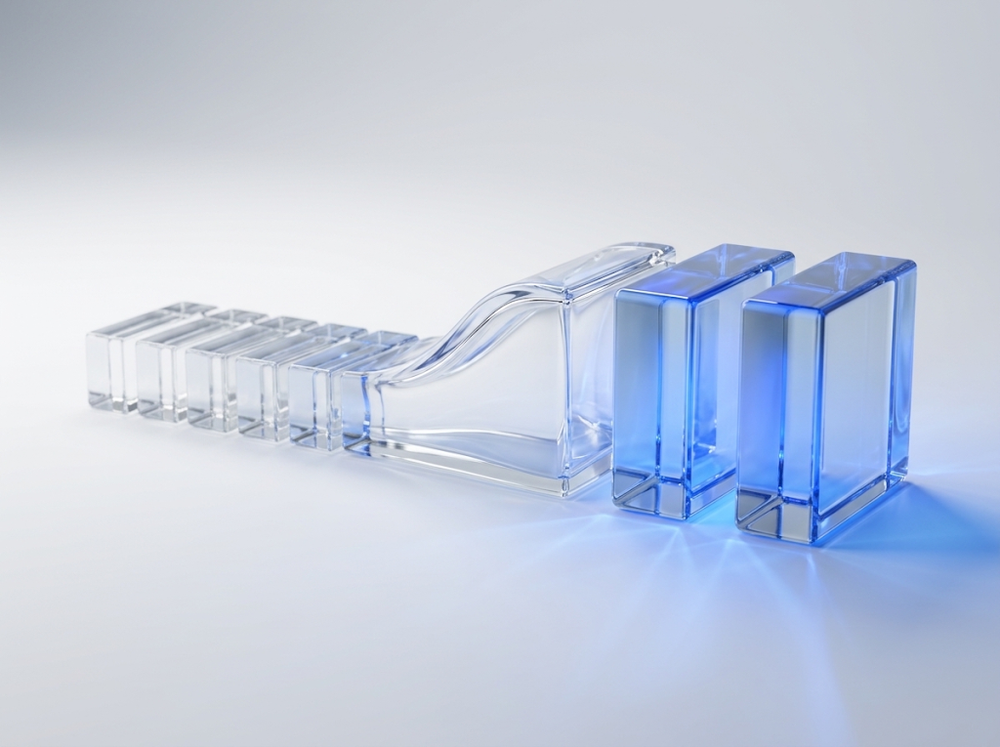
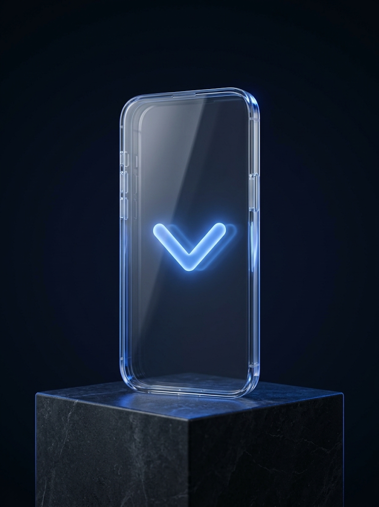
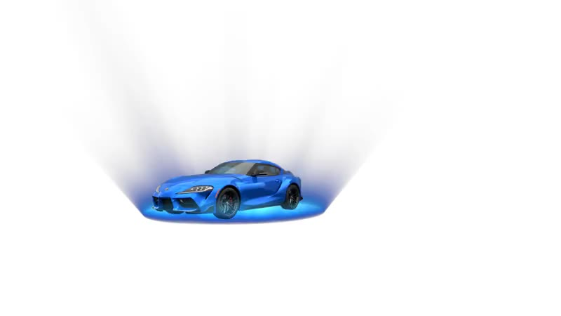
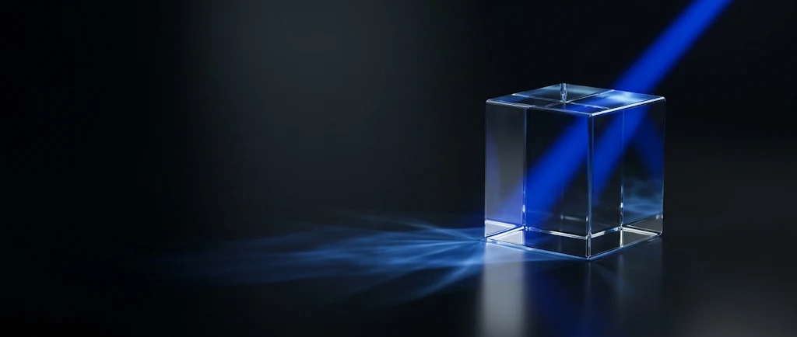

Cesar Lopez · Open to Director / VP roles
AI Product Design Management. The new E2E operating model.
The Double Diamond, rebuilt for AI: agents explore and build, people decide, the design system holds it together, and guardrails protect what ships. It is how I lead — shaped over 18 years across industrial design, 3D, enterprise platforms and the ventures I founded.
years in product & design
designers & developers led
ventures founded
service flows redesigned,
from 7 steps to 3
faster time to market,
Customer Connect
API reuse
across the program
hours saved a year — 9,000
agents, 180M customers
Selected work — AI orchestration first
01 / 03 · AT&T · Under NDA
AI Product Journey, Pulse & Plexus
An AI-agent operating model presented to VPs and AVPs — and the tools that run it: Pulse for OKRs, and Plexus, 25 agents that turn a Jira epic into a build-ready package.
Read the case →
02 / 03 · AT&T · Under NDA
Customer Connect
8x faster to market for 9,000 agents serving 180M customers. Seven steps became three.
Read the case →
03 / 03 · Founder · Fintech
Nexus
A fintech platform I founded, designed and built around verified human identity. Passkeys, not passwords.
Read the case →Leadership, by chapter
AT&T — Lead Sr UX Designer
Leading 5 designers on AI-driven and agentic experiences.
AT&T — Sr UX Designer · UX Architect
50+ service flows, Customer Connect, AI Product Journey.
Brain Group
Led up to 10 designers and developers.
Founder — Nexus, Together, SwapZone
Strategy, design and code, end to end.
Where I come from: 3D.
Industrial designer by training. Years of building products you can turn around in your hands.




Let's build what wins.
© 2026 Cesar Augusto Lopez Rodriguez · iamcesarlopez.com